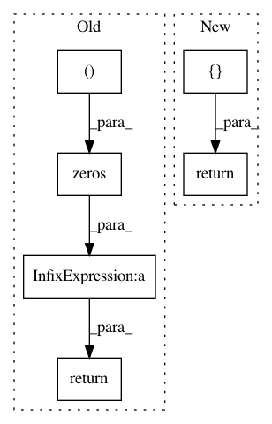

b2bcab711d333442c282cf64c66a9fac2c93218f,rllib/models/tf/attention_net.py,GTrXLNet,get_initial_state,#GTrXLNet#,318
Before Change
// State is the T last observations concat"d together into one Tensor.
// Plus all Transformer blocks" E(l) outputs concat"d together (up to
// tau timesteps).
return [np.zeros((self.max_seq_len, self.obs_dim), np.float32)] + \
[np.zeros((self.memory_tau, self.attn_dim), np.float32)
for _ in range(self.num_transformer_units)]
@override(ModelV2)
def value_function(self) -> TensorType:
return tf.reshape(self._value_out, [-1])
After Change
// TODO: (sven) Deprecate this once trajectory view API has fully matured.
@override(RecurrentNetwork)
def get_initial_state(self) -> List[np.ndarray]:
return []
@override(ModelV2)
def value_function(self) -> TensorType:
return tf.reshape(self._value_out, [-1])
In pattern: SUPERPATTERN
Frequency: 3
Non-data size: 6
Instances
Project Name: ray-project/ray
Commit Name: b2bcab711d333442c282cf64c66a9fac2c93218f
Time: 2020-12-20
Author: sven@anyscale.io
File Name: rllib/models/tf/attention_net.py
Class Name: GTrXLNet
Method Name: get_initial_state
Project Name: ray-project/ray
Commit Name: d5604eaba321c11c1b9616c283262c4ddea55049
Time: 2020-12-21
Author: sven@anyscale.io
File Name: rllib/models/torch/attention_net.py
Class Name: GTrXLNet
Method Name: get_initial_state
Project Name: GPflow/GPflow
Commit Name: 41fa0902ddf895045b0a109852d9b2f724e1d808
Time: 2016-01-14
Author: james.hensman@gmail.com
File Name: GPflow/kernels.py
Class Name: White
Method Name: K